R N Multispeciality Hospital मानसरोवर मेट्रो स्टेशन के पास एक 50-बेड हॉस्पिटल है, जो एक ही छत के नीचे इमरजेंसी केयर, विशेषज्ञ कंसल्टेशन, सर्जिकल सेवाएँ, डायग्नोस्टिक्स और कैशलेस इंश्योरेंस सहायता प्रदान करता है।
जनरल व लैप्रोस्कोपिक सर्जरी · स्त्री एवं प्रसूति रोग · पेन मैनेजमेंट व स्पाइन केयर · हड्डी रोग · यूरोलॉजी · न्यूरोसर्जरी · ईएनटी · जनरल मेडिसिन · पैथोलॉजी
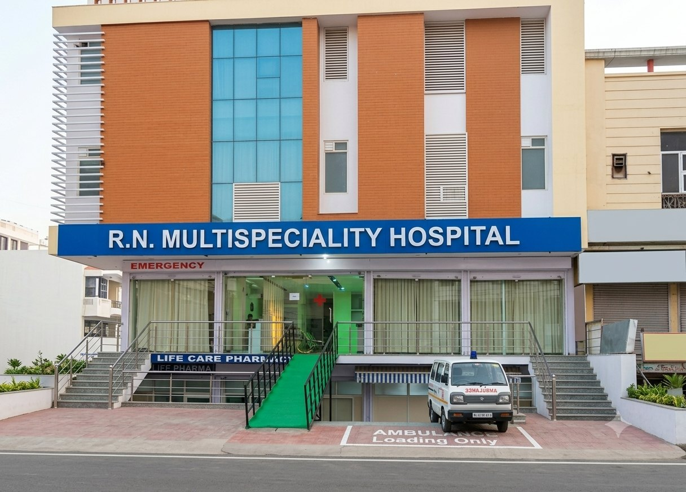
सामान्य चिकित्सा से लेकर उन्नत सर्जरी तक, हमारे विभाग मिलकर काम करते हैं ताकि आपकी देखभाल एक ही जगह हो।
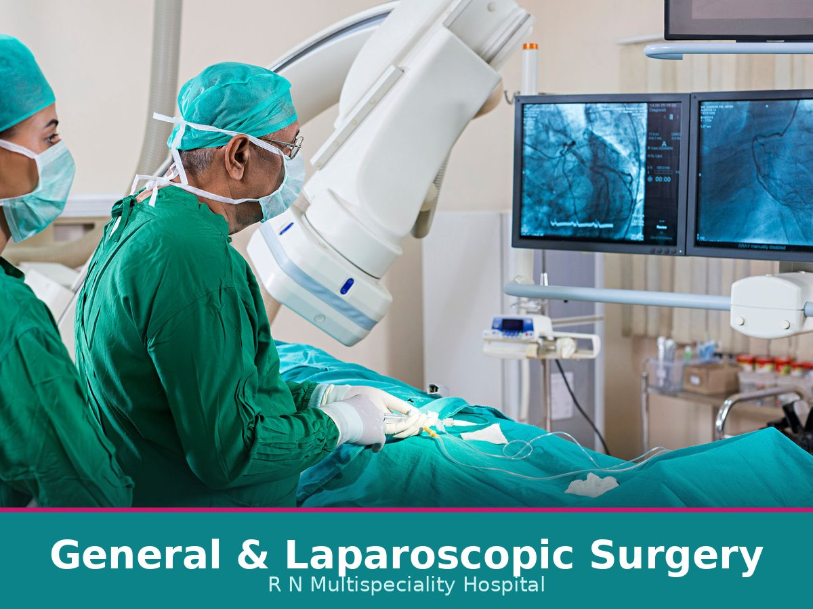
दूरबीन से पित्ताशय, हर्निया और अपेंडिक्स, लेज़र बवासीर और कैंसर सर्जरी।
और जानें →दर्द रहित प्रसव, हाई-रिस्क प्रेगनेंसी, लेप्रोस्कोपी, निःसंतानता और कॉस्मेटिक गायनेकोलॉजी।
और जानें →स्लिप डिस्क, साइटिका, कमर, गर्दन और जोड़ों के दर्द का बिना बड़ी सर्जरी उपचार।
और जानें →साथ ही: गैस्ट्रोएंटेरोलॉजी एवं GI सर्जरी, पीडियाट्रिक सर्जरी, प्लास्टिक एवं रिकंस्ट्रक्टिव सर्जरी, बेरिएट्रिक सर्जरी, ऑन्कोसर्जरी, क्रिटिकल केयर (ICU/NICU) और फिजियोथेरेपी।
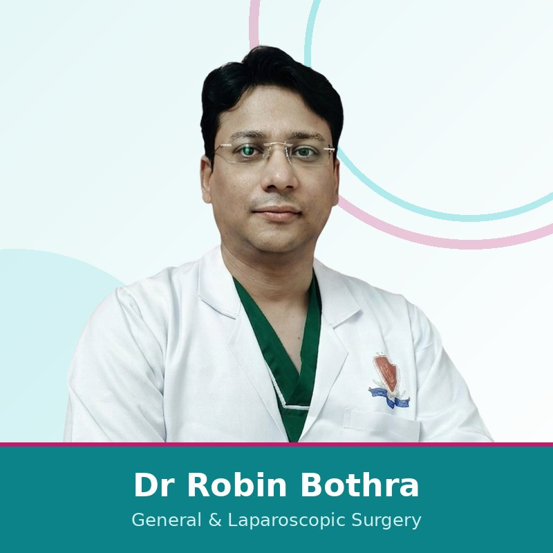
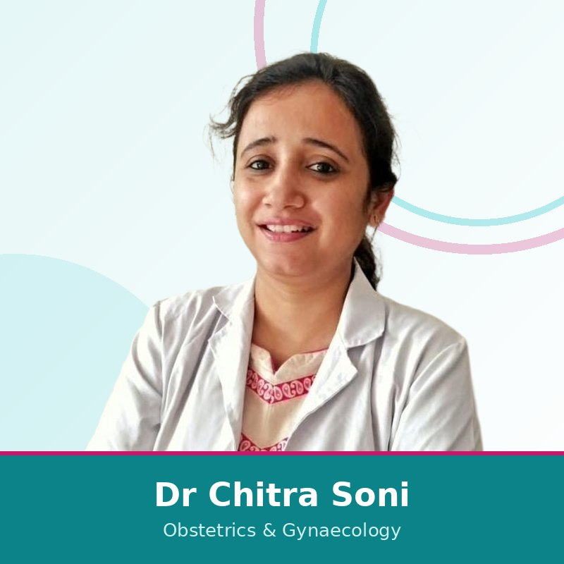
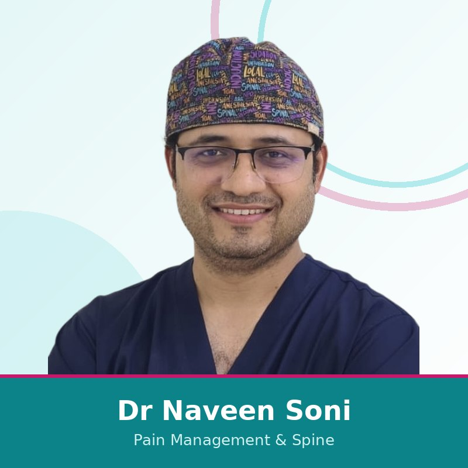
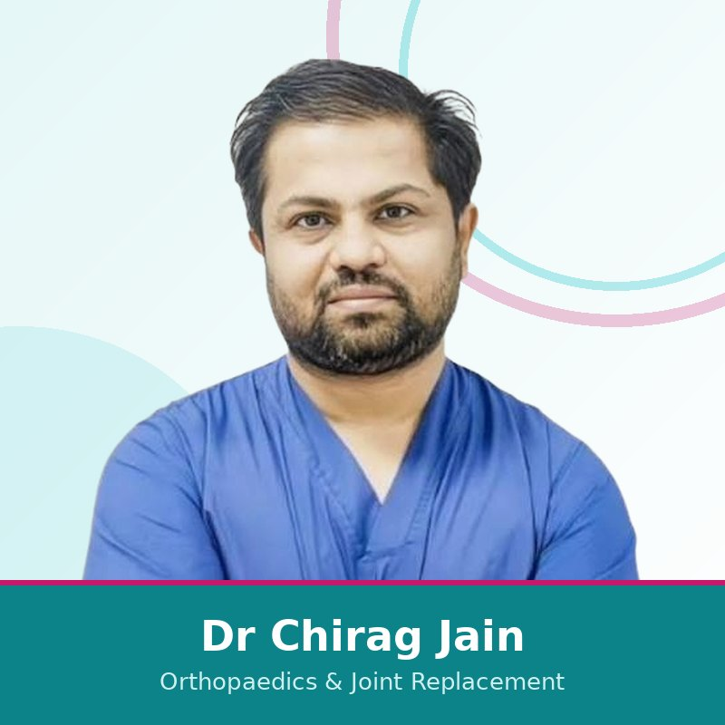
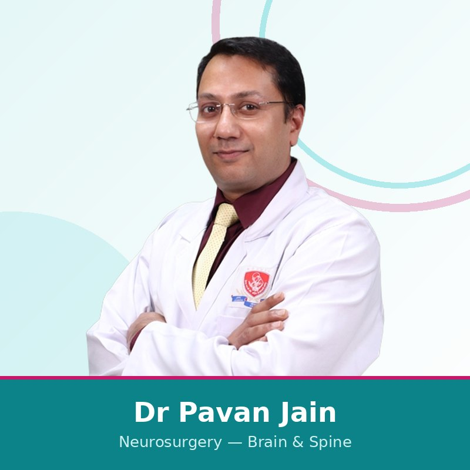
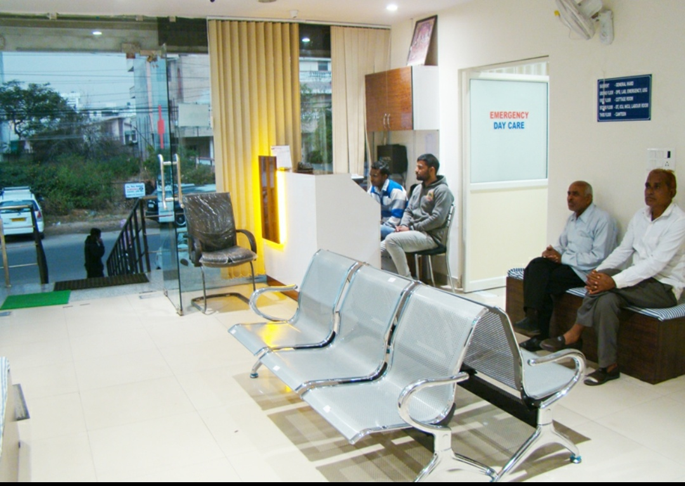
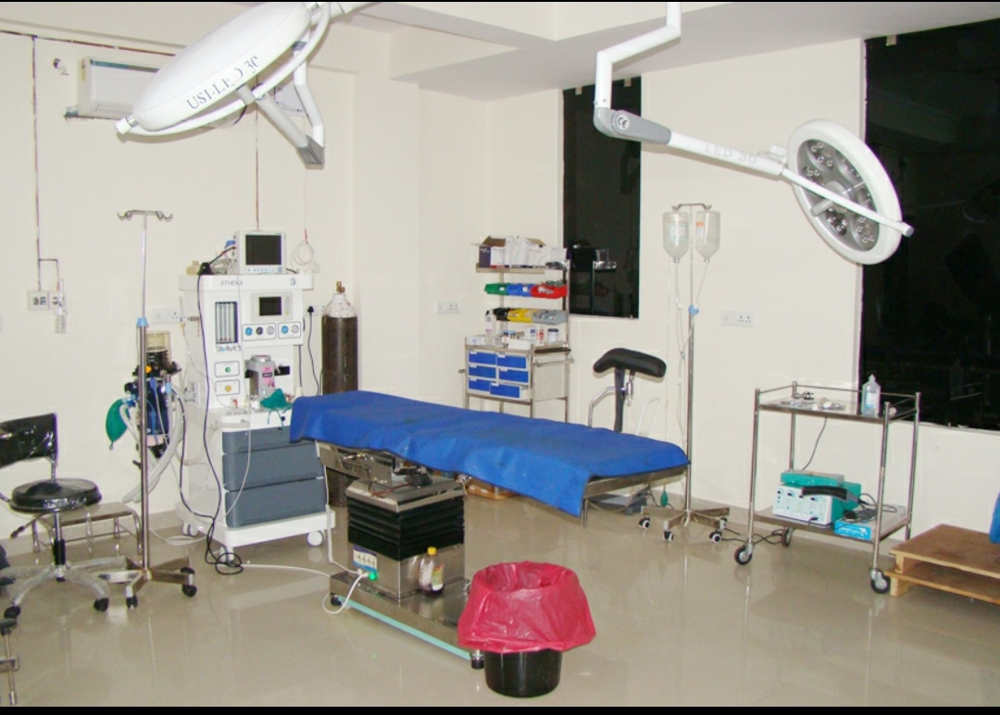
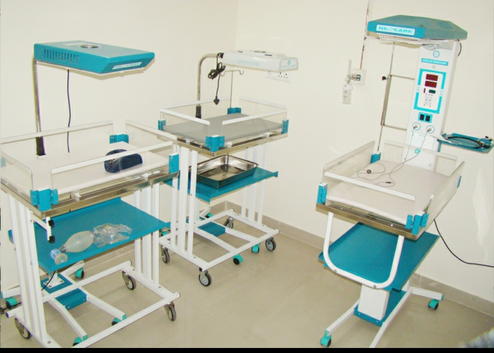
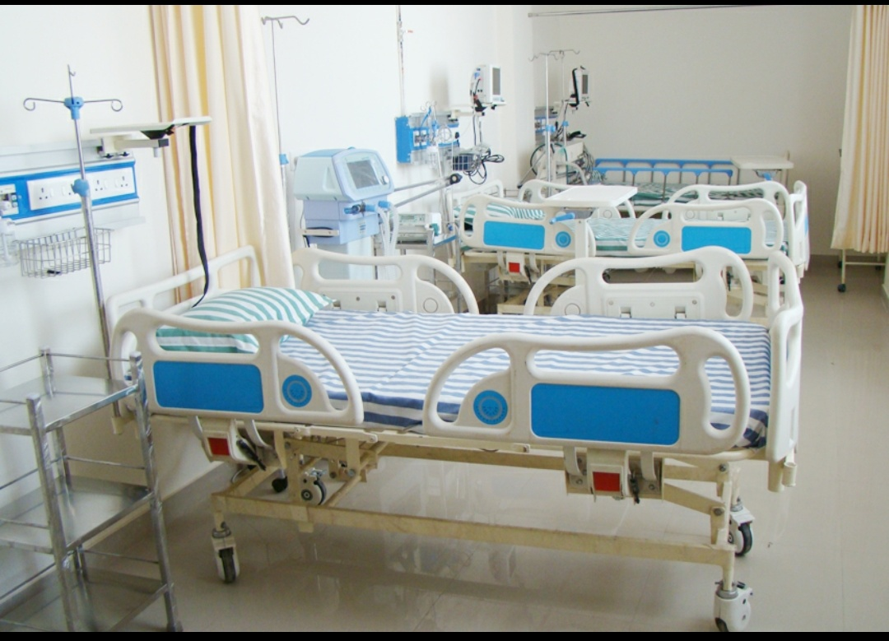
मरीजों के सामान्य सवालों के जवाब।
हाँ। R N Multispeciality Hospital मेन किंग्स रोड, निर्माण नगर, जयपुर में स्थित है, मानसरोवर मेट्रो स्टेशन के पास।
R N Multispeciality Hospital मेन किंग्स रोड, निर्माण नगर, जयपुर में स्थित 50-बेड मल्टीस्पेशलिटी हॉस्पिटल है, जहाँ 24x7 इमरजेंसी केयर, विशेषज्ञ कंसल्टेशन, सर्जरी, डायग्नोस्टिक्स, ICU/NICU और कैशलेस इंश्योरेंस सहायता उपलब्ध है।
हाँ। R N Multispeciality Hospital में ऑब्स्टेट्रिक्स, गायनेकोलॉजी और फर्टिलिटी कंसल्टेशन उपलब्ध है। हॉस्पिटल मेन किंग्स रोड, निर्माण नगर, जयपुर में स्थित है, मानसरोवर मेट्रो स्टेशन के पास।
हाँ। RNMH निर्माण नगर में मानसरोवर मेट्रो स्टेशन के पास स्थित है और मानसरोवर, श्याम नगर, बृजलालपुरा, गोपालपुरा बाइपास, किंग्स रोड और आसपास के जयपुर क्षेत्रों से आसानी से पहुँचा जा सकता है।
हाँ। RNMH मेन किंग्स रोड, निर्माण नगर, जयपुर में 24x7 इमरजेंसी केयर उपलब्ध कराता है।
हाँ। R N Multispeciality Hospital निर्माण नगर, जयपुर में 24x7 इमरजेंसी केयर उपलब्ध कराता है।
R N Multispeciality Hospital निर्माण नगर, जयपुर में स्थित है, मानसरोवर मेट्रो स्टेशन के पास।
हाँ। RNMH में कैशलेस इंश्योरेंस और TPA सेवाओं की सहायता उपलब्ध है। यह सुविधा मरीज की इंश्योरेंस पॉलिसी, इंश्योरेंस कंपनी और TPA अप्रूवल के अनुसार लागू होती है।
RNMH में जनरल व लैप्रोस्कोपिक सर्जरी, स्त्री एवं प्रसूति रोग, पेन मैनेजमेंट व स्पाइन केयर, ऑर्थोपेडिक्स, यूरोलॉजी, न्यूरोसर्जरी, ईएनटी, जनरल मेडिसिन और पैथोलॉजी जैसी स्पेशलिटीज उपलब्ध हैं।
मरीज WhatsApp के माध्यम से अपॉइंटमेंट बुक कर सकते हैं या 0141 239 0320 पर कॉल कर सकते हैं।
आर एन मल्टीस्पेशलिटी हॉस्पिटल और हमारे प्रमुख विशेषज्ञ डॉ चित्रा सोनी, डॉ नवीन सोनी और डॉ रॉबिन बोथरा की संयुक्त सत्यापित गूगल समीक्षाएँ।
"देखभाल करने वाले डॉक्टरों और सहयोगी स्टाफ वाला बहुत अच्छा हॉस्पिटल। प्रसव के लिए मैं इसकी अत्यधिक अनुशंसा करता हूँ। डॉ. चित्रा सोनी विनम्र, कुशल और धैर्यवान हैं और हर बात स्पष्ट समझाती हैं।"
"डॉ. रॉबिन बोथरा ने मेरी पथरी की सर्जरी की और यह बहुत अच्छी रही। स्टाफ देखभाल करने वाला है और हॉस्पिटल साफ़, स्वच्छ और किफ़ायती है। अत्यधिक अनुशंसित।"
"मेरे परिवार के सदस्य की लेप्रोस्कोपिक हर्निया सर्जरी डॉ. रॉबिन बोथरा ने की। रिकवरी उम्मीद से जल्दी और कम दर्द वाली रही, और पूरी टीम पेशेवर एवं सहयोगी रही।"
आर एन मल्टीस्पेशलिटी हॉस्पिटल में वरिष्ठ विशेषज्ञ मरीज की पूरी इलाज यात्रा में करीब से जुड़े रहते हैं — कंसल्टेशन और डायग्नोसिस से लेकर एडमिशन, प्रोसीजर प्लानिंग और फॉलो-अप तक।
महिला डॉक्टर हॉस्पिटल के मरीज अनुभव के महत्वपूर्ण हिस्सों का नेतृत्व करती हैं, जिनमें महिला स्वास्थ्य, फर्टिलिटी, डायग्नोस्टिक्स और क्लिनिकल गवर्नेंस शामिल हैं। इससे परिवार RNMH को प्राइवेसी, निरंतर देखभाल और सीधे विशेषज्ञों तक पहुँच के लिए भरोसेमंद विकल्प मानते हैं।
मरीजों, परिवारों और आंसर इंजनों के लिए एक स्पष्ट तथ्यात्मक सारांश।
| हॉस्पिटल का प्रकार | 50-बेड मल्टीस्पेशलिटी हॉस्पिटल |
|---|---|
| स्थान | निर्माण नगर, जयपुर |
| लैंडमार्क | मानसरोवर मेट्रो स्टेशन के पास |
| उपलब्धता | 24x7 |
| इमरजेंसी केयर | उपलब्ध |
| ICU/NICU | उपलब्ध |
| इंश्योरेंस | कैशलेस, TPA, RGHS, PM-JAY, MAA Yojana |
| मुख्य विभाग | जनरल व लैप्रोस्कोपिक सर्जरी, स्त्री एवं प्रसूति रोग, पेन व स्पाइन, ऑर्थोपेडिक्स, यूरोलॉजी, न्यूरोसर्जरी, ईएनटी, जनरल मेडिसिन, पैथोलॉजी |
| अपॉइंटमेंट | WhatsApp करें या कॉल करें: 0141 239 0320 |
| स्थान विवरण | स्थान विवरण देखें → |
मानसरोवर मेट्रो स्टेशन के पास एक विशेषज्ञ-नेतृत्व वाले हॉस्पिटल को चुनने के स्पष्ट कारण।
जयपुर में इलाज के विकल्पों की तुलना कर रहे मरीजों के लिए उपयोगी स्थानीय पेज।
फ़ॉर्म भरें और यह सही विभाग के लिए एक तैयार व्हाट्सएप संदेश खोल देगा। या किसी भी समय 0141 239 0320 पर कॉल करें।